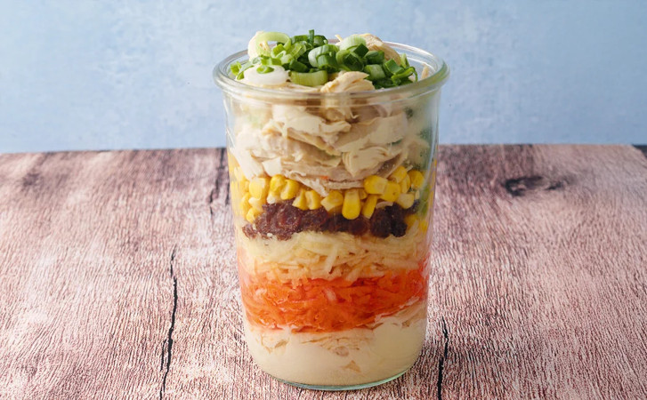

Chicken salad
spiced chicked salad with crisp vegetables

This salad is ideal for a brunch or a barbeque! With it's creamy dressing
and the crisp vegetables it complements your main dish perfectly!
Are your taste buds ready?
Ingredients (one serving)
- 150g chicken breast fillet
- 100ml chicken broth
- 1/2 onion
- 1 clove of garlic
- 1/2 Tbsp canola oil
- 1/2 carrot
- 1/2 apple
- 1/2 Tbsp lime juice
- 12.5g raisins
- 37.5g of canned corn
- 1/2 spring onion
- 1 Tbsp Mayonnaise
- 15 ml white wine vinegar
- 1/2 Tbsp sugar
- 1/2 Tbsp mustard
Steps
- Cook the chicken fillet in boiling chicken broth, then cook at low temps until the meat can be pulled with two forks easily
- cut the onion and the garlic into fine cubes and sautè in canola oil until transparent
- Peel the apples and Carrots, grate them coarsely and add the lime juice. Add onion, garlic, raisins and corn.
- Mix the Mayonnaise, sugar, white wine vinegar and the mustard together. Add the self-made dressing together with the chicken fillet and the spring onions to the rest of the salad. And you're done already!
Return to Homepage